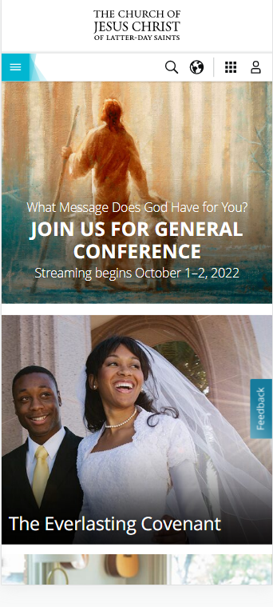
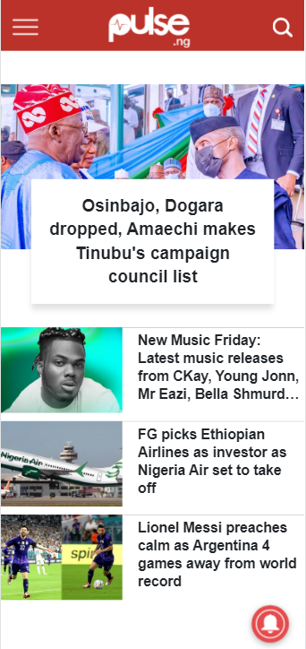

Visual Hierachy
The Church of Jesus Christ of Latter-day Saints
churchofjesuschrist.org On opening the church's website, the first things one notices are the picture of the Savior and the invitation "JOIN US FOR GENERAL CONFERENCE". Using visual hierachy, The text for the invitation was made bold and written in all caps to be the main focal message. The sorounding text, being the second items of focus were written in smaller fonts. In general, the site has a very simplistic, yet creative visual appeal, hecause informations were arranged in order of importance using the principle of visual hierachy.
Allignment
Pulse News
pulse.ng It is almost impossible not to notice the use of allignment here. The text for the head line news is center aligned, and the texts for the other news articles are left alligned. This use of allignment makes the page tidy and gives it a good aesthetic feel. it also conforms with the "F" reading pattern and shows how the lines of text are related by grouping.
Rule of Thirds
Samsung
samsung.comAlthough there are many elements of good design practice here, one element that caught my attention was the rule of thirds used in the banner image. If the banner image were to be divided into three vertical halves, the man holding the camera will be ocupying the far right of the page, leaving 2/3 part of the page empty. This principle makes it easier for us to focus on the central image, which is the creative process between the hand held camera and the man been advertised.